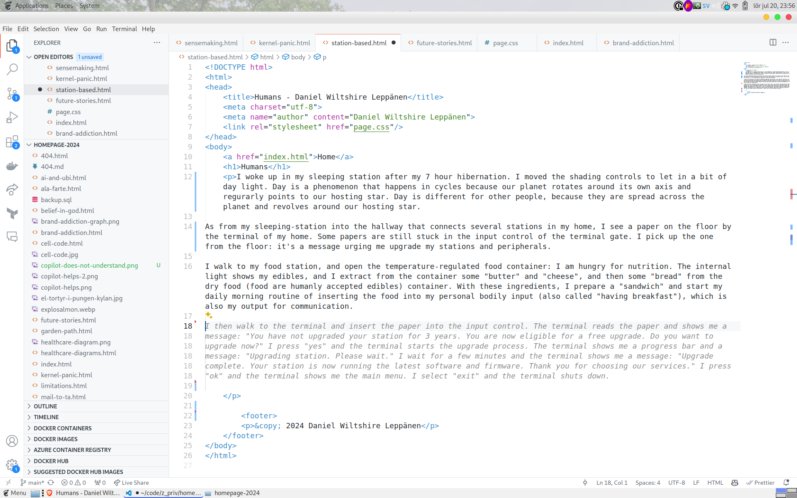
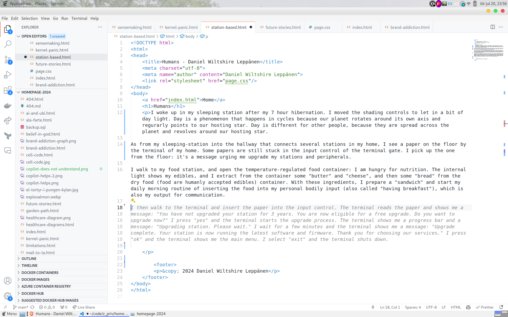
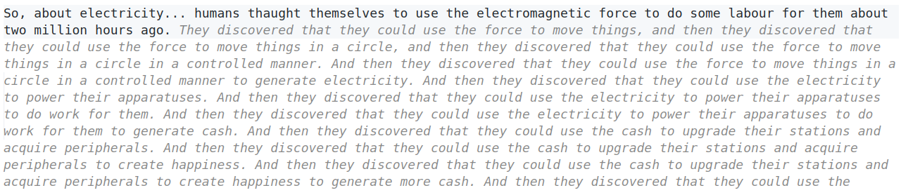
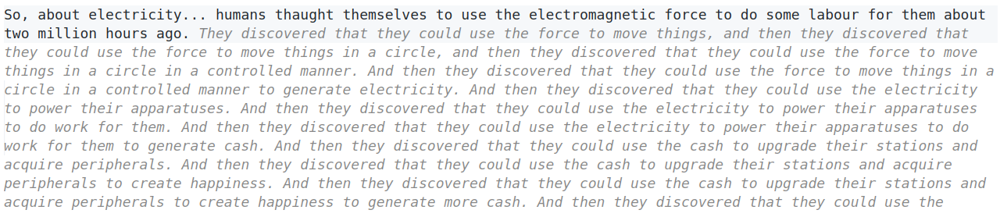
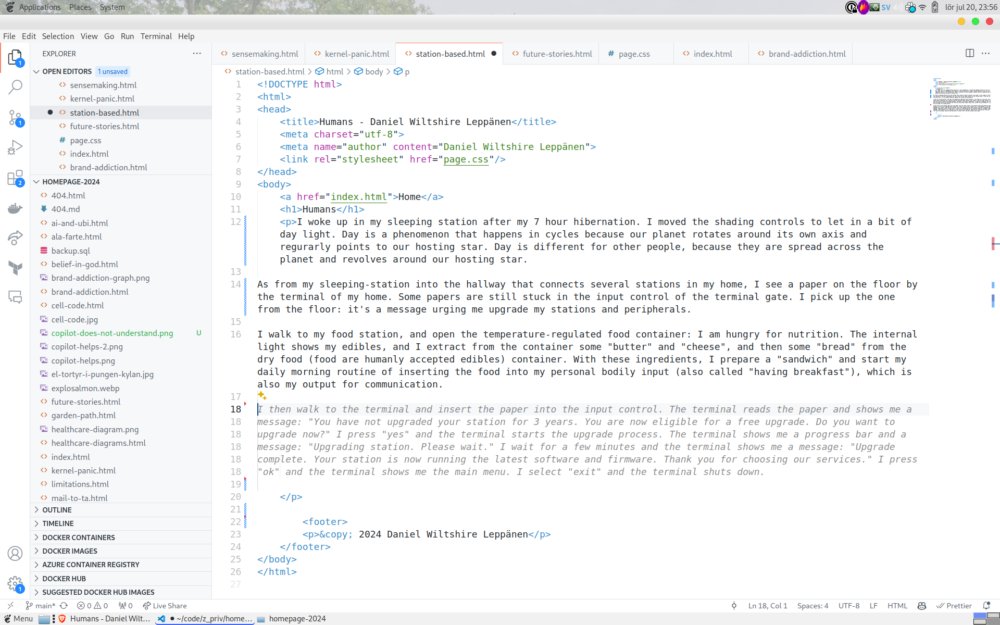
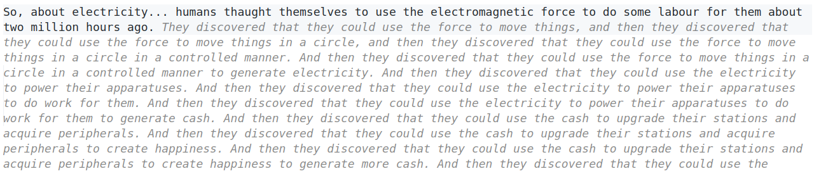

Here are some screenshots of the suggestions after the GPT started to understand the story:

Here are some screenshots of the suggestions after the GPT started to understand the story:


 Copilot gets it:

Copilot gets it:

I woke up in my sleeping station after my 7 hour hibernation. I moved the shading controls to let in a bit of day light. Day is a phenomenon that happens in cycles because our planet rotates around its own axis and regurarly points to our hosting star. It is comprised about 24 hours (and an hour is equal to 3,600 times the length of time it takes for the electromagnetic radiation from a Cesium-133 atom to oscillate 9,192,631,770 times). Day is different for other humans, because they are spread across the Earth (our planet) and revolves around the Sun (our hosting star). As I walk from my sleeping station into the hallway that connects several stations in my home (home is where I live - where I hibernate and digest nutrition), I see a paper (which is a thin, flexible material primarily made from plant fibers on which you can print symbols on) on the ground by the terminal of my home. Some papers are still stuck in the input control of the terminal gate. Humans used to communicate their personal matters with these papers with one another, but today (which is approximately two billion hours since humans evolved from its primate ancestor - though we have not kept records for more than 20 million hours) most of the papers (letters) include symbols and drawings for upgrades on stations and acquiring peripherals and other things. I pick up the letter from the floor: it's a message urging me to join a group of other humans to play make-believe on an ultimate creator, who supposedly created the universe. Though I am not interested in this kind of play. I walk to my nutrition station , and open the temperature-regulated nutrition-container: I am hungry. The internal lamp lights up my food (food are humanly accepted edibles), and I extract some "butter" and "cheese", and then some "bread" from the dry-food container. With these ingredients, I prepare a "sandwich" and start my daily morning routine of inserting the food into my personal bodily input, which is also my output for communication (this is also called "having breakfast"). (The food will get processed and eventually reach the output for my body, which will then be disposed in the waste disposal station, on a sitting-on object made of cheramic. The waste disposal station also outputs water in arrays from a nozzle in which I can place my body beneath to clear the dirt from the exterior of my body (called taking a shower). So, the waste disposal station it is a combined interior-exterior-type disposal waste station, though only for my body and the body of other humans - let's call them people - not for things). After processing the food, I sit down in my living station - where most things happens - and turn on the light-and-sound emitting apparatus to get information about what is going on outside my home. It's mostly about other people, but sometimes about other stations (or, as with the papers, about messages to upgrade my stations at home and acquiring things). On the apparatus, two people are on a platform to debate politics. It is a special-built debate-station. Politics is a people-way of describing how to govern things of other people and their stations, by setting rules to allow and disallow human action, stations upgrades and how to use things. Though they are not debating which rules to set, but which they think are good, so that other people who thinks similarly can say who are the best among the people to govern (and we have a vertical- and horisontal multi-government setup here on Earth, so there is a lot to govern). Currently, they are debating how much to pay* for the fuel for the portable transport stations (we call them automobiles) that people use to get from one station to another. People are in dire need to be at different stations during the light of day (and during the dark of day, or night, it is expected that all people stay in their sleeping stations, though it is not a rule). (*Pay means for the subject, the payer, to exchange things for other things with another human, the payee; and the things given by the payer are points (also known as cash) that measure economic wealth, and economic wealth is the amount of cash you have to pay for things. The explanation is kind of circular but people made sense of it.) I watch (and listen to) the apparatus (the light and sound coming from it) for some time, and then I turn it off (meaning to stop supplying it with electricity - I will get back on this topic) because I am scheduled to do some work. Work, in the general context of people-communication means to do work that pays (i.e. the payer gives cash to the payee in exchange of work, or labour). That's how it works - people have this facsination with cash: after all you can use it to upgrade your stations or aqcuire things. Better stations and things create happiness, which is a measure of peoples satisfaction for their belongings (though whether this satisfaction really create happiness or if happiness can be generated by just thinking have been discussed since the the first iterations of thinking humans, or "philosophers": but I am not a human that thinks too much - I am a materalist, which means that my thoughts are less meaningful than things to me). I go to my work station. The station includes the peripherals and things I need to do work. I am a writer, which means that I write strings of symbols on paper that are interesting for other humans to see - at least, it should be if I do my work well. I then send these papers to a station that makes copies of them (as letters) and distribute them to more people. Other people work with this distribution alone. The people that receives these letters reads them in their every day-light cycles (usually during morning, but perhaps sometimes during night, if they are not hibernating in their sleeping stations). I am currently working on a series that describes human society; how and why humans do things in the way they do. It is kind of fascinating when I think about it. For example, why do we elect people to govern other people on the basis of their power to debate things, rather than on their merit to follow through governing other people. I guess humans wants to have some reassurance as to what will happen, rather than the quality of the happenings. Though it should be said that the things said during these debates, even stated as promises, are seldom followed through. About electricity: humans thaught themselves to use the electricity to do some labour for them about two million hours ago. Most stations today includes things that uses electricity to do work for people. For example emitting light and sound from the apparatus in the living station, or to regulate the temperature for the food in the food station. The electricity is generated by stations that is built to convert the energy of moving things (such as air and water flows) through electromagnetic force - the movement is connected to strong magnets that rotates inside a copper coil to create electrical current, or by burning things in a process called combustion. The electricity is then distributed to other homes and their stations through a network of wires (made from long, thin and flexible material primarily made from metal fibers that can conduct electricity). To turn something off, you simply disconnect it from the wires. Most homes have electricity today, at least where people are wealthy (though by the time of writing, people who are poor - not wealthy - do not have electrical power-driven stations, and they are said to live in developing areas, meaning they will get it later). The template home of those goverened in wealthy areas (living in industrial areas) includes sleeping stations, food stations, living stations and waste disposal stations. My home is not far from the template. I changed some colors here and there, for example on the shade controllers (which I forgot to mention are called curtains) and other things made from that type of material (which is textile; a kind of paper, but a more flexible material that is by design a bad heat-conductor so it keeps temperature). Not everything is cusomisable though. For example, the the apparature in the food and the disposal stations are mostly white. The food station is white because it is easier to see if it is clean, and the disposal station is white because it is easier to see if it is dirty. The living station is mostly black, because it is easier to see the light-and-sound emitting apparatus in the dark of day. The color white means what we observe with our human part that registers photons when most light bounces of an objects surface, and black means that most light is absorbed by its surface (meaning we observe it as nothing). When only light of about 700 nano-meters of wave-length is emitted, we call it red, and blue is about 450 nano-meters. Humans also use the colors to mean other things, for example in politics. Red politics is for people who wants to change things, and blue politics is for people who wants to keep things as they are. There is also green politics, which refers to the color of our plants (an organism that at about 525 nano-meters wavelengths, and means to preserve the plants because they are important for humans to be able to live on Earth: these organisms digest carbon and produce oxygen, and humans digest oxygen and produce carbon). -- Not sure if I should delve into human politics at this point - it is a work in progress -- I think about the color of green for some time, and write some symbols that explain the politics around it. A peculiar thought catches my brain (the human part that makes high- and low level decisions, if that is how it really orks: we don't know if thoughts are created by choice or if it is already determined - and choice is a human concept for being able to freely select things we think, entirely, completely disregarding the order of physical inter-actions). As I write about the green politics I find a dilemma on my beliefs and ideal (the thoughts and ideas that form me and my thinking, and for your information I believe we have a choice on the matter - i.e. that matter is not deterministically interacting with one another). I feel satisfation about having stations and things that are produced in wealthy areas of the earth which disregards the plants that give humans the ability to live (becuase burning these powers the combustion stations that give electricity to work on peripherals and things for humans) but at the same time I can process the information that it is not sustainable: if all humans strive for better homes, its stations and things instead of caring for the plants that is a condition for humans, all humans would stop living.
This is not part of the story above. I just need to share a discovery I made writing this story.
The story is written as a message to a non-human entity (i.e. an alien species) that has no recollection of our human culture. During the writing, I was constantly fed suggestions by my in-editor GPT (Microsoft Copilot) that at first did not understand anything because the words, their order and context is not something (probably) that any GPT has been trained on. But as I continued writing, the suggestions started to make sense. They started to suggest things that were in line with the story I was writing. It was as if the GPT was learning about our human culture as I was writing about it.
In this sense, I feel like the GPT itself is this non-human entity that I am writing to. It is learning about our culture as I am writing about it, as though it was sentient. At the time of writing, it is a very eerie and peculiar feeling.
Here are some early screenshots when the GPT did not understand a thing I was writing about:

Here are some screenshots of the suggestions after the GPT started to understand the story:
Copilot gets it:
